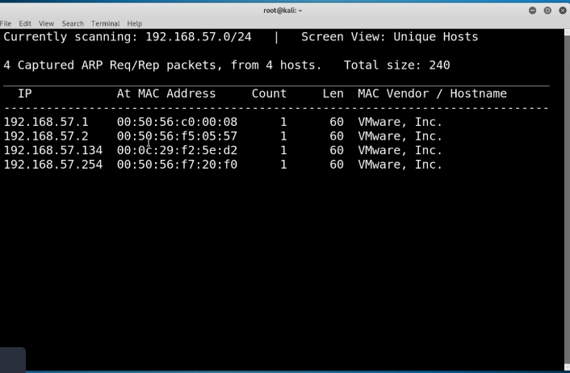

sudo netdiscover -r [subnet]
Uses ARP to detect all the machines on the network
Example:

Alternatively, use nmap -sP [subnet] to host discover
Example:

nmap -sS (stealth scan, not actually stealthy anymore is actually easily detectable)
Why is it called a stealth scan?
Instead of doing the full TCP handshake (SYN SYNACK ACK) it will send a reset after it has deteremined a port is opened or closed, so it does not actually establish a connection (SYN SYNACK RST)
nmap -sU (port scan over UDP, takes a while since it is a connectionless protocol; only scan top 1000)
nmap -T4 -p- -A
-T4 = Speed, 1 is slowest, 5 is fastest (4 is a good default, the slower the better in terms of detection)
-p- = I want to scan all ports (leaving off -p will scan the top 1000 ports, -p 80,443 will scan only 80 and 443)
-A = Scan everything (version information, OS information, anything nmap can tell you ) (recommend scanning a -p- without -A, determine which ports are open, and -A on the specified ports that you found in the last scan)
Example: